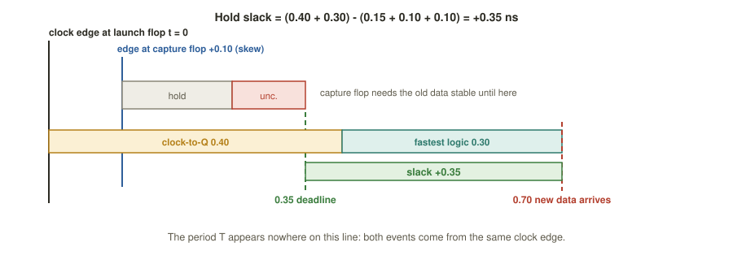

Chapter 7: Static Timing Analysis¶
Placement, clock-tree synthesis and routing have committed the design to real cells, a real clock network and real parasitics. Now comes the question that decides whether the chip works at speed: does every path meet timing? Static timing analysis (STA) answers it exhaustively, for millions of paths, at every operating condition, without applying a single test vector. It is the gatekeeper of tapeout.
Chapter 2 introduced setup and hold slack for an ideal clock. This chapter completes them with clock skew and uncertainty, shows how to read the summary numbers (WNS and TNS) and a real timing report line by line, explains why a chip must be analysed at several corners, and sets out the opposite remedies for setup and hold violations.
Learning outcomes
After this chapter you can:
- Explain what makes timing analysis static, and list the four kinds of timing path.
- Compute setup and hold slack including skew and uncertainty, and explain why hold ignores the clock period.
- Interpret WNS and TNS, and read a timing report line by line.
- Explain PVT corners, multi-corner multi-mode analysis, on-chip variation and temperature inversion.
- Choose the right remedy for a setup or a hold violation.
7.1 What STA is¶
Static timing analysis adds up the propagation delay along every path of the gate-level design and compares it with the time the clock allows. "Static" means that no input stimulus is applied: STA needs no testbench, no vectors and no idea of what the logic does. It walks the delay graph once and checks every path, a coverage that no amount of dynamic simulation could match. Where a simulation exercises the few scenarios you thought to write, STA proves a bound that holds for all inputs.
The price of this generality is that STA is topological. It will happily report paths that can never occur in practice (false paths) and paths whose launch and capture are more than one cycle apart (multicycle paths). You tell the tool about them with SDC constraints, so that it does not flag phantom violations.
STA rests on three pieces of data from earlier stages: cell delays from the .lib, wire resistance and capacitance from the .spef, and the clock definition and exceptions from the .sdc.
A timing path runs from a startpoint (the clock pin of a register, or a primary input) to an endpoint (the data pin of a register, or a primary output). STA checks every startpoint-to-endpoint path against both a maximum-delay constraint (setup) and a minimum-delay constraint (hold). There are four families of path.
| Path | From | To | Bounded by |
|---|---|---|---|
| register to register | launch flip-flop's clock pin | capture flip-flop's data pin | the clock period: the usual critical paths |
| input to register | primary input | capture flip-flop's data pin | set_input_delay |
| register to output | launch flip-flop's clock pin | primary output | set_output_delay |
| input to output | primary input | primary output | pure logic straight through |
Table 7.1 The four kinds of timing path.
STA turns a hard question, "will this chip ever fail at speed, for any input?", into an arithmetic one it can answer for every path at once: compare when data arrives at an endpoint with when it is required there. The difference is the slack.
7.2 The full setup check¶
The setup rule is the basic synchronous rule: data launched by one clock edge must be stable at the capture flip-flop before the next capture edge, less the flip-flop's setup time. Let the launch flip-flop's clock arrive at \(t_{launch}\) and the capture flip-flop's at \(t_{capture}\). Then
Here \(t_{unc}\) is the clock uncertainty, a margin for jitter (the clock edge wobbling from cycle to cycle) plus safety; it always eats slack. Writing skew \(= t_{capture} - t_{launch}\) and taking the launch edge as time zero, this collapses to the form used in the rest of the book:
Example 7.1: Full setup check
\(T = 5.0\) ns, \(t_{cq} = 0.40\), slowest logic \(3.20\), \(t_{su} = 0.30\), \(t_{unc} = 0.10\), skew \(= 0.10\) ns.
- Arrival \(= 0.40 + 3.20 = 3.60\) ns.
- Required \(= 5.0 + 0.10 - 0.30 - 0.10 = 4.70\) ns.
- Slack \(= 4.70 - 3.60 = +1.10\) ns: met.
At \(T = 3.5\) ns:
- Required \(= 3.5 + 0.10 - 0.30 - 0.10 = 3.20\) ns.
- Slack \(= 3.20 - 3.60 = -0.40\) ns: violated. The clock has outrun the logic.
(Here skew and uncertainty happen to cancel, so the numbers equal those of Example 2.1.)
7.3 The full hold check¶
Hold is the mirror image, and the more treacherous half. The data launched by an edge must not race through so fast that it corrupts the value that the same edge is capturing at the downstream flip-flop, which needs its current data to stay stable for \(t_h\) after the edge. The minimum logic delay is used, because the fastest way through is the dangerous one:
The period \(T\) does not appear. Both effects in a hold check come from the same clock edge: the check compares two consequences of one clock event at the two flip-flops. Slowing the clock does nothing for hold (Figure 7.1).
Example 7.2: Full hold check
\(t_{cq} = 0.40\), fastest logic \(0.30\), \(t_h = 0.15\), skew \(= 0.10\), \(t_{unc} = 0.10\) ns.
- Earliest arrival of new data \(= 0.40 + 0.30 = 0.70\) ns.
- Deadline \(= 0.15 + 0.10 + 0.10 = 0.35\) ns.
- Slack \(= 0.70 - 0.35 = +0.35\) ns: met.
Now let the skew grow to \(0.60\) ns (the capture clock arrives much later than the launch clock):
- Deadline \(= 0.15 + 0.60 + 0.10 = 0.85\) ns.
- Slack \(= 0.70 - 0.85 = -0.15\) ns: violated. The skew that helped setup has broken hold.

Why hold is the dangerous one
A setup failure means the chip will not run at full speed; slow the clock and it works, so a setup problem can often be worked round in the laboratory. A hold failure is not frequency dependent: the part is broken at every clock speed, even the slowest. There is no knob on the tester that fixes it. If a hold violation escapes to silicon the chip is useless and the masks must be remade. That is why hold is closed conservatively, at the fast corner.
7.4 The clock's imperfections¶
An ideal clock reaches every flip-flop at once. A real clock, distributed by a buffer tree across millimetres of die, does not.
| Effect | What it is | Effect on timing |
|---|---|---|
| Latency | delay from the clock source to a flip-flop's clock pin, split into source latency and network latency | cancels in a register-to-register check if equal at both ends; only the difference matters |
| Skew | the difference in arrival between two related flip-flops, capture minus launch | helps one check and hurts the other: setup gains when capture is later, hold loses |
| Jitter and uncertainty | cycle-to-cycle variation of the edge (from the PLL) plus a margin, modelled with set_clock_uncertainty |
always subtracted: it eats both setup and hold slack |
| Shared clock path | launch and capture clock paths share some buffers before they split, so their variations are correlated | pessimism that was counted twice on the shared part is credited back (CPPR or CRPR) |
Table 7.2 Clock non-idealities.
This is why CTS matters so much to timing: it is the tool's one chance to make latencies match and skew small. A well-balanced tree hands STA a clock that behaves almost ideally; a sloppy one hands it skew that becomes hold violations to be buffered away.
7.5 Reading the results¶
Critical path, WNS and TNS¶
Slack is the single number that summarises a path. Two aggregate figures summarise a whole design.
- The critical path is the path with the smallest (worst) slack; it sets the maximum clock frequency.
- WNS, worst negative slack, is the most negative slack over all endpoints: how deep the hole is. WNS \(\ge 0\) means the whole design meets that check.
- TNS, total negative slack, is the sum of the negative slacks over all failing endpoints (positive slacks count as zero): how wide the hole is, and how much work closure still needs.
A design with WNS \(= -0.4\) ns and TNS \(= -0.4\) ns has one lonely failing path. WNS \(= -0.4\) ns with TNS \(= -85\) ns has thousands of failing endpoints: something systemic, such as an over-ambitious clock or a bad corner, not a single fixable path.
Example 7.3: WNS and TNS from a list
Five endpoints have setup slacks \(+0.80\), \(-0.20\), \(-0.10\), \(+0.30\) and \(-0.40\) ns. The worst is \(-0.40\), so WNS \(= -0.40\) ns. Only the three negative values count in the total: TNS \(= -0.20 - 0.10 - 0.40 = -0.70\) ns. Three endpoints fail, the worst by 0.4 ns.
A real timing report¶
This is roughly what OpenSTA or OpenROAD prints for report_checks -path_delay max.
Startpoint: ctrl_reg[3] (rising edge-triggered flip-flop clocked by clk)
Endpoint: data_reg[7] (rising edge-triggered flip-flop clocked by clk)
Path Group: clk
Path Type: max (a SETUP check)
Delay Time Description
--------------------------------------------------------
0.000 0.000 clock clk (rise edge)
0.120 0.120 clock network delay (propagated) <- launch latency
0.000 0.120 ^ ctrl_reg[3]/CLK (sky130_fd_sc_hd__dfxtp_1)
0.310 0.430 v ctrl_reg[3]/Q <- clock-to-Q
0.240 0.670 ^ U231/X (sky130_fd_sc_hd__nand2_1)
0.680 1.350 ^ U244/X (sky130_fd_sc_hd__and3_2) <- the logic cone
1.020 2.370 ^ U259/X (sky130_fd_sc_hd__buf_4)
0.430 2.800 v data_reg[7]/D
2.800 data arrival time
5.000 5.000 clock clk (rise edge) <- next capture edge, T = 5.0
0.130 5.130 clock network delay (propagated) <- capture latency
0.000 5.130 clock reconvergence pessimism (CRPR)
-0.300 4.830 library setup time
-0.100 4.730 clock uncertainty
4.730 data required time
--------------------------------------------------------
4.730 data required time
-2.800 data arrival time
--------------------------------------------------------
1.930 slack (MET)
Read it from the top. The upper block builds the arrival time: the clock network delay to the launch flip-flop (0.120 ns), the clock-to-Q (0.310), then each gate and the final wire into the D pin. The lower block builds the required time: the next edge at 5.000 ns, plus the capture latency (0.130), minus the setup time (0.300) and the uncertainty (0.100). The last line, required minus arrival, is the slack. A hold report (-path_delay min) looks the same, but compares against the same edge and the slack must clear the hold time.
Example 7.4: Every number in the report
From the report above: launch latency 0.120 ns; clock-to-Q 0.310 ns; logic and wire delay \(0.240 + 0.680 + 1.020 + 0.430 = 2.370\) ns; arrival \(0.120 + 0.310 + 2.370 = 2.800\) ns; required 4.730 ns; slack \(+1.930\) ns. The single cell that contributes most delay is U259, a buf_4, at 1.020 ns; it is probably driving a long or heavily loaded net, and a fix would be to split its load, place it nearer its loads or re-buffer the net. Keeping everything else equal, the shortest period this path could meet follows from \(T + 0.130 - 0.300 - 0.100 \ge 2.800\), so \(T \ge 3.07\) ns, about 326 MHz.
7.6 Corners and variation¶
A cell's delay is not one number. It depends on Process (how the wafer came out), Voltage (supply droop) and Temperature. Libraries are measured at named PVT corners, one .lib per corner, and signoff must hold at all of them.
| Corner | Conditions | Cells are | Worst for |
|---|---|---|---|
| SS (slow) | slow silicon, low voltage, extreme temperature | slowest, longest delays | setup (latest arrival) |
| TT (typical) | nominal process, voltage and temperature | nominal | sanity checks and power |
| FF (fast) | fast silicon, high voltage | fastest, shortest delays | hold (data races through) |
Table 7.3 The classic PVT corners.
The pairing is the crux. Setup is worst at the slow corner, where logic is sluggish and arrival is late; hold is worst at the fast corner, where logic is quick and data races. No single corner can therefore sign a design off: at the least, setup is closed at SS and hold at FF.
Temperature inversion
The intuition "hotter means slower" fails at low voltage in modern processes, Sky130 included. Below a crossover voltage, lower temperature makes cells slower, so the true worst setup corner may be the cold, low-voltage corner. This is why signoff enumerates corners exhaustively and does not trust a rule of thumb.
Multi-corner multi-mode (MCMM) analysis is the framework. A mode is a functional configuration with its own constraints and clocks (normal operation, scan test, low power). A corner is a PVT and wire-extraction condition (fast or slow wires too). The tool forms the cross-product, every mode at every relevant corner, and a path passes signoff only if it meets timing in all active scenarios. A real chip may have dozens.
On top of corners sits on-chip variation (OCV): even on one die, identical cells differ slightly. STA models this by derating, stretching the launch path's delays and shrinking the capture path's (for setup) to add pessimism. Advanced OCV (AOCV) makes the derate depend on path depth and distance, since long paths average out variation and need less margin; parametric methods (POCV) go further with statistical, sigma-based derates. CPPR then credits back the pessimism that was double counted on shared clock segments.
7.7 Fixing violations¶
When a report shows negative slack, the cure depends on which check failed, and the two are almost opposites.
| Setup violation (path too slow) | Hold violation (path too fast) | |
|---|---|---|
| Goal | make the data arrive earlier | make the data arrive later |
| Fixes | up-size slow cells, use faster (low-threshold) cells, restructure the logic cone, improve placement to cut wire delay, buffer long nets, add a pipeline stage, use useful skew; as a last resort slow the clock | insert delay (buffer) cells on the fast path, down-size or swap to slower (high-threshold) cells, route the longer way; the clock period is irrelevant |
| Goes back to | synthesis (structure, cell choice), placement (wire length), CTS (useful skew) | CTS (skew balance), routing (detours), placement (cell spacing) |
Table 7.4 Setup and hold need opposite medicine.
The two fight. Hold buffers add area and can create new setup paths; the useful skew that helps setup can open a hold gap elsewhere. That is why timing closure is iterative, and why the slack left by earlier stages is so valuable. OpenROAD runs repair loops, repair_timing -setup and repair_timing -hold, that apply exactly these moves automatically; the intuition for what they are doing is what this chapter has built.
Common misconception
"If the design meets setup, it works." Setup is half the story. A design can pass every setup check with large positive slack and still be dead on arrival because one hold path fails at the fast corner, and unlike setup, you cannot slow the clock to rescue it. Meeting setup means it works at speed; meeting hold means it works at all. Both are mandatory for signoff.
Think about it
A register-to-register path has a comfortable \(+1.9\) ns of setup slack. You insert a big buffer to speed up a long net. Later a hold check on the same path fails. What did the buffer change?
Answer
The buffer changed the delay of the logic and wire on that path. If it sped up the fastest route through the logic, it reduced \(t_{logic,min}\). Hold depends on the fast case, \(t_{cq} + t_{logic,min}\), and not on the slow one, so a change that makes the fast route faster can push hold negative even while setup improves. Fixing one check can open a violation of the other.
Summary¶
- STA checks every path for setup and hold with no test vectors, using
.lib,.spefand.sdc. The four path types are register to register, input to register, register to output and input to output. - Setup slack \(= (T + \text{skew} - t_{su} - t_{unc}) - (t_{cq} + t_{logic,max})\). Hold slack \(= (t_{cq} + t_{logic,min}) - (t_h + \text{skew} + t_{unc})\), independent of \(T\).
- Skew helps one check and hurts the other; uncertainty hurts both. WNS is the depth of the worst failure and TNS its total width. A report builds arrival and required times line by line.
- Setup is closed at the slow corner and hold at the fast corner, across all modes, with margins for on-chip variation; beware temperature inversion.
- Fix setup by speeding paths up; fix hold by slowing them down.
Exercises¶
Exercise 7.1: Slack by hand
A path has \(T = 5.0\), \(t_{cq} = 0.35\), slowest logic 4.10, fastest logic 0.20, \(t_{su} = 0.25\) and \(t_h = 0.10\) ns. (a) Find the setup slack, the hold slack and \(f_{max}\) with no skew. (b) Now let skew \(= +0.30\) and uncertainty \(= 0.10\). Find both slacks again. (c) At the slow corner every cell delay (clock-to-Q, logic, setup, hold) is multiplied by 1.25, and at the fast corner by 0.8; keep skew and uncertainty. Which check fails where?
Answer
(a) Setup \((5.0 - 0.25) - 4.45 = +0.30\) ns; hold \(0.55 - 0.10 = +0.45\) ns; \(f_{max} = 1/(0.35 + 4.10 + 0.25\ \text{ns}) = 1/4.70\ \text{ns} \approx 213\) MHz. (b) Setup \((5.0 + 0.30 - 0.25 - 0.10) - 4.45 = +0.50\) ns; hold \(0.55 - (0.10 + 0.30 + 0.10) = +0.05\) ns. (c) Slow corner: \(t_{cq} = 0.4375\), logic 5.125, \(t_{su} = 0.3125\), so setup \(= (5.0 + 0.30 - 0.3125 - 0.10) - (0.4375 + 5.125) = 4.8875 - 5.5625 = -0.675\) ns, which fails. Fast corner: \(t_{cq} = 0.28\), fastest logic 0.16, \(t_h = 0.08\), so hold \(= (0.28 + 0.16) - (0.08 + 0.30 + 0.10) = 0.44 - 0.48 = -0.04\) ns, which fails. Setup fails at the slow corner and hold at the fast corner, and both must be fixed: the classic corner pair.
Exercise 7.2: Setup and hold with skew and uncertainty
\(T = 2.0\) ns, \(t_{cq} = 0.15\), slowest logic 1.50, fastest logic 0.05, \(t_{su} = 0.10\), \(t_h = 0.20\), skew \(+0.10\), uncertainty \(0.05\) (ns). (a) Setup slack? (b) Hold slack? (c) Which fix would you apply?
Answer
(a) \((2.0 + 0.10 - 0.10 - 0.05) - (0.15 + 1.50) = 1.95 - 1.65 = +0.30\) ns, met. (b) \((0.15 + 0.05) - (0.20 + 0.10 + 0.05) = 0.20 - 0.35 = -0.15\) ns, violated. (c) Add about 0.15 ns of delay buffers on the short path. Setup has 0.30 ns to spare, so it can afford them; changing \(T\) would not help.
Exercise 7.3: Read a report
From the timing report in Section 7.5, state the launch latency, the clock-to-Q, the total logic delay, the arrival, the required time and the slack, and say which cell contributes the most delay.
Answer
Launch latency 0.120 ns; clock-to-Q 0.310 ns; logic and wire delay \(0.240 + 0.680 + 1.020 + 0.430 = 2.370\) ns; arrival 2.800 ns; required 4.730 ns; slack \(+1.930\) ns. The biggest single contributor is U259, a buf_4, at 1.020 ns. Without changing anything else the path could meet a period down to \(T \ge 3.07\) ns (about 326 MHz).
Exercise 7.4: Which fix?
Your run shows WNS \(= -0.2\) ns at the slow corner and a hold violation at the fast corner. Slowing the clock by 10 % makes the first go away. Why does it not fix the second, and what will?
Answer
Hold slack does not contain the clock period: launch and capture happen on the same edge. The cure is to make the short path slower, with delay buffers inserted after the clock tree (OpenROAD's repair_timing -hold), or to reduce the skew that hurts it.
Exercise 7.5: WNS and TNS
Two designs both have WNS \(= -0.4\) ns. Design A has TNS \(= -0.4\) ns and design B has TNS \(= -85\) ns. Which is nearer to closing, and why?
Answer
Design A. With TNS equal to WNS there is exactly one failing endpoint, a single path to fix. Design B has thousands of failing endpoints, which points to something systemic, such as an over-ambitious clock or the wrong corner.
Exercise 7.6: Set T very large
Set \(T\) to a huge value such as 1000 ns in the hold equation. Does the hold slack change? What does that say about running a chip slowly to be safe?
Answer
It does not change at all: \(T\) is absent from the hold equation. Running a chip more slowly can rescue a setup failure but never a hold failure, so "run slower to be safe" does not work for hold.